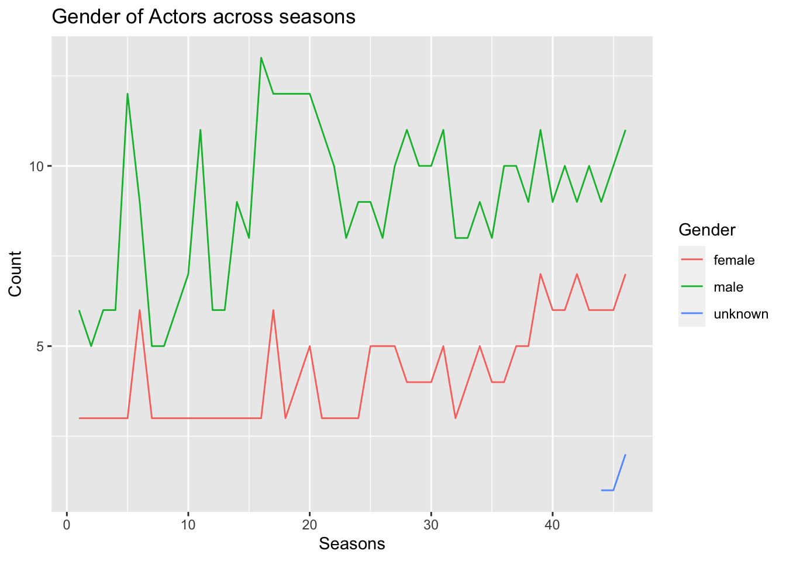

library(tidyverse)
library(ggplot2)
knitr::opts_chunk$set(echo = TRUE, warning=FALSE, message=FALSE)Challenge 8 Solution
challenge_8
railroads
snl
faostat
debt
Joining Data
Challenge Overview
Today’s challenge is to:
- read in multiple data sets, and describe the data set using both words and any supporting information (e.g., tables, etc)
- tidy data (as needed, including sanity checks)
- mutate variables as needed (including sanity checks)
- join two or more data sets and analyze some aspect of the joined data
(be sure to only include the category tags for the data you use!)
Read in data
Read in one (or more) of the following datasets, using the correct R package and command.
- military marriages ⭐⭐
- faostat ⭐⭐
- railroads ⭐⭐⭐
- fed_rate ⭐⭐⭐
- debt ⭐⭐⭐
- us_hh ⭐⭐⭐⭐
- snl ⭐⭐⭐⭐⭐
actors <- read.csv("_data/snl_actors.csv")
head(actors) aid url type gender
1 Kate McKinnon /Cast/?KaMc cast female
2 Alex Moffat /Cast/?AlMo cast male
3 Ego Nwodim /Cast/?EgNw cast unknown
4 Chris Redd /Cast/?ChRe cast male
5 Kenan Thompson /Cast/?KeTh cast male
6 Carey Mulligan /Guests/?3677 guest andydim(actors)[1] 2306 4seasons <- read.csv("_data/snl_seasons.csv")
head(seasons) sid year first_epid last_epid n_episodes
1 1 1975 19751011 19760731 24
2 2 1976 19760918 19770521 22
3 3 1977 19770924 19780520 20
4 4 1978 19781007 19790526 20
5 5 1979 19791013 19800524 20
6 6 1980 19801115 19810411 13dim(seasons)[1] 46 5casts <- read.csv("_data/snl_casts.csv")
head(casts, 20) aid sid featured first_epid last_epid update_anchor n_episodes
1 A. Whitney Brown 11 True 19860222 NA False 8
2 A. Whitney Brown 12 True NA NA False 20
3 A. Whitney Brown 13 True NA NA False 13
4 A. Whitney Brown 14 True NA NA False 20
5 A. Whitney Brown 15 True NA NA False 20
6 A. Whitney Brown 16 True NA NA False 20
7 Alan Zweibel 5 True 19800409 NA False 5
8 Sasheer Zamata 39 True 20140118 NA False 11
9 Sasheer Zamata 40 True NA NA False 21
10 Sasheer Zamata 41 False NA NA False 21
11 Sasheer Zamata 42 False NA NA False 21
12 Bowen Yang 45 True NA NA False 18
13 Bowen Yang 46 True NA NA False 17
14 Fred Wolf 21 True NA NA False 20
15 Fred Wolf 22 True NA 19961019 False 3
16 Casey Wilson 33 True 20080223 NA False 8
17 Casey Wilson 34 True NA NA False 22
18 Kristen Wiig 31 True 20051112 NA False 15
19 Kristen Wiig 32 False NA NA False 20
20 Kristen Wiig 33 False NA NA False 12
season_fraction
1 0.4444444
2 1.0000000
3 1.0000000
4 1.0000000
5 1.0000000
6 1.0000000
7 0.2500000
8 0.5238095
9 1.0000000
10 1.0000000
11 1.0000000
12 1.0000000
13 1.0000000
14 1.0000000
15 0.1500000
16 0.6666667
17 1.0000000
18 0.7894737
19 1.0000000
20 1.0000000Briefly describe the data
I chose the SNL dataset. It has three files described as below: 1. Actor: It contains the details of the actors who worked with SNL. There are 4 columns where the column ‘aid’ represents the name of the person, ‘url’ refers to the url associated to the aid and two other columns type and gender which talks about how the aid is associated and the gender of the aid respectively. The show featured 2306 actors in total. 2. Seasons: It contains the details of all season of SNL. The date first and last episodes were released and the number of episodes in each season. sid contains the season number. This show had 46 seasons. 3. Casts: This contains the data of actor , the season in which they were featured and episode details.
Tidy Data (as needed)
I will check for null values in any of the datasets since null values inflate rows in case of joins. The first episode and last episode id contains some null values. However we will not be using these columns to make any joins thus we can ignore them.
colSums(is.na(actors)) aid url type gender
0 0 0 0 colSums(is.na(seasons)) sid year first_epid last_epid n_episodes
0 0 0 0 0 colSums(is.na(casts)) aid sid featured first_epid last_epid
0 0 0 564 597
update_anchor n_episodes season_fraction
0 0 0 Join Data
I will join the actors, casts and season data to plot the distribution of male and female actors over the seasons to see if there is any bias as is claimed with regards to SNL.
actors_casts <- actors %>% inner_join(casts, by="aid")
actors_casts_seasons <- actors_casts %>% inner_join(seasons, by="sid")Data Visualization
We can see that there is a bias between the female and male actors who appear on SNL.
seasons_gender <- actors_casts_seasons %>%
select(sid, gender)
seasons_gender <- seasons_gender %>% group_by(sid, gender) %>% summarise(count = n())
# Create the line plot
ggplot(seasons_gender, aes(x = sid, y = count, group = gender, color = gender)) +
geom_line() +
labs(title = "Gender of Actors across seasons",x = "Seasons", y = "Count", color = "Gender") 